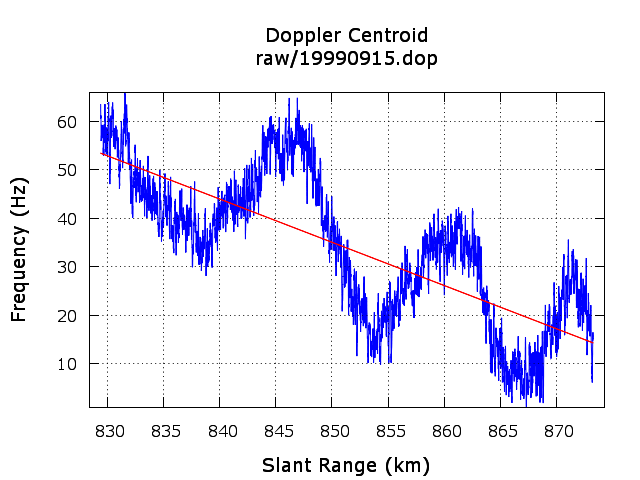

ANSI-C programs: doppler.c, doppler_real.c
NAME
doppler,doppler_real -
Calculate Doppler centroid as a function of slant range using the
echo cross correlation from SAR raw data (IQ ADC format: doppler,
offset-video ADC: doppler_real).
SYNOPSIS
doppler <SAR_par> <PROC_par>
<signal_data> <doppler> [loff] [nsub] [ambig_flag]
[namb] [order] [pltflg]
| <SAR_par> | (input) SAR sensor parameter file |
| <PROC_par> | (input) MSP processing parameter File |
| <signal_data> | (input) uncompressed SAR raw data (IQ data) |
| <doppler> | (output) Doppler centroid as function of slant range |
| [loff] | number of lines offset (enter - for default: PROC_par loff value) |
| [nsub] | number of azimuth subapertures (enter - for default:
12) |
| [ambig_flag] | Doppler ambiguity resolution flag 0 = use unambiguous Doppler Ambiguity Resolver (DAR) estimate (default) 1 = estimate Doppler ambiguity number from the Doppler slope 2 = command line entry for the Doppler ambiguity number |
| [namb] | user defined number of Doppler ambiguities to add to
the Doppler function (enter - for default: 0) |
| [order] | order of polynomial used to fit the range Doppler function 0-->3: (enter - for default: 1) |
| [pltflg] |
Doppler centroid plotting
flag: 0: none (default) 1: output plot in PNG format |
doppler_real <SAR_param> <PROC_param>
<signal_data> <doppler> [loff] [nprf]
[nsub]
| <SAR_par> | (input) SAR sensor parameter file |
| <PROC_par> | (input) MSP processing parameter file |
| <signal_data> | (input) Uncompressed SAR raw data (IQ data) |
| <doppler> | (output) Doppler centroid as function of slant range |
| [loff] | number of lines offset (enter - for default=parameter file value) |
| [nsub] | Number of azimuth sub-apertures (default=12) |
| [ambig_flag] | Doppler ambiguity resolution flag 0 = use unambiguous Doppler Ambiguity Resolver (DAR) estimate (default) 1 = estimate Doppler ambiguity number from the Doppler slope 2 = command line entry for the Doppler ambiguity number |
| [namb] | User defined number of Doppler ambiguities to add to the Doppler function |
EXAMPLES
doppler raw/ERS2_ESA.par raw/p19990915.slc.par
raw/19990915.fix raw/19990915.dop 0 12 0 0 1 1
DESCRIPTION
doppler, doppler_real - The Doppler centroid is
calculated from the SAR raw data (IQ data or video offset data)
as a function of slant range using the line to line correlation
method developed by Soren Madsen. The Doppler ambiguity can
either be set to a given value, estimated from the slope of the
doppler centroid with respect to range, or determined from the
unambiguous doppler estimated by dop_ambig. A fit of the doppler function in
range can then be used to estimate the pitch and azimuth angles
of the SAR antenna. A polynomial function is derived from the
estimated pitch and azimuth angles to obtain a doppler function
that processes the data to lie on a plane intersecting the earth
surface. The pitch and azimuth angles are stored in the SAR
Sensor parameter file used by the MSP. The polynomial
coefficients of the doppler in range is stored in the processing
parameter file. The order of the polynomial used for the fit in
doppler can be specified on the command line and must in the
range from 0 (constant) to 3
It is recommended that the unambiguous doppler estimate from
dop_ambig be used to resolve the
doppler ambiguity. The data segment used for the estimation can
be specified by the user by setting the offset in lines relative
to the beginning of the file. The auto-focus program af may also be used to resolve the Doppler
ambiguity. Each Doppler ambiguity is equivalent to a shift of the
Doppler centroid by the pulse repetition frequency (Hz).
Plotting of the Doppler centroid as a function of range is
controlled by the pltflg
command line parameter. When the pltflg is 1, the plot of doppler
centroid as a function of range is stored as an image in
PNG format. A sample centroid plot with the linear fit is shown
below.

doppler_real
currently does not support direct plotting to a file or
screen. However the doppler values and the linear fit to
the data can be plotted using gnuplot:
echo " plot '19990915.dop' u 2:3 with lines lc 3, '19990915.dop'
u 2:4 with lines lc 1" |gnuplot
This generates a screen plot that shows the doppler centroid
in Hertz as a function of slant range (km) and the linear fit of
the doppler centroid.
SEE ALSO
Users Guide, typedef_MSP.h, MSP Processing Parameter File, af, dop_ambig,
azsp_IQ.